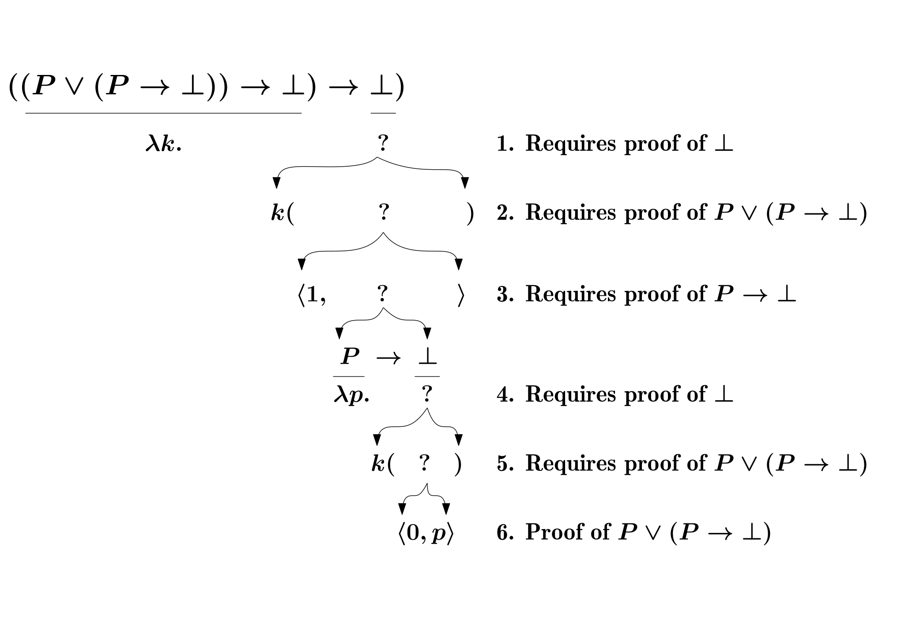

Intuitionistic Logic
2022-05-05
Intuitionism
直觉主义（Intuitionism）1 是主要由 L. E. J. Brouwer 以及其学生 Heyting 奠基的一派数学哲学，其主要观点是数学是人心智的构造物：自然数/实数/证明/定理… 都是心智的构造物，这些数学对象是被创造出来的而不是从客观世界中被发现的，唯有当存在其有效的构造方法时才能证明其存在（即构造性证明，而经典方法允许以否定其不存在的方式证明其存在）；另外对无穷的看法也有所不同，Brouwer 拒绝实无穷（Actual Infinity）的概念而仅接受潜无穷（Potential Infinity），因为诸如包含全体自然数的集合其实是没有办法有效的被构造出来，而只有永续的但有限的集合能被构造出来2
NOTE: 个人感觉有效构造究竟是什么其实挺模糊的
Example of Constructive/Non-constructive proof
下面是一个常见的构造性/非构造性证明的例子
若 \(a\) 和 \(b\) 均是无理数，则 \(a^b\) 可能是有理数
Non-constructive proof
\(\sqrt 2 ^ {\sqrt 2}\) 要么是有理数，要么是无理数
- 如果是有理数，则已经得证，因为 \(a=\sqrt 2\) 以及 \(b=\sqrt 2\) 均是无理数
- 如果是无理数，则令 \(a=\sqrt 2 ^ {\sqrt 2}\)，\(b=\sqrt 2\)，易知 \[ a^b = (\sqrt 2 ^ {\sqrt 2}) ^ {\sqrt 2} = \sqrt 2 ^ {\sqrt 2 \cdot \sqrt 2} = \sqrt 2 ^ 2 = 2 \]
该证明是非构造性证明，因为：它依赖于排中律（e.g. 有理数或无理数）来给出两种可能性，而究竟是哪一个成立甚至都无关紧要
Constructive proof
令 \(a = \sqrt 2\) 以及 \(b = log_{2} 9\) 则 \(2^b = (a \cdot a)^b = a^b \cdot a^b = 9\) 故 \(a^b = 3\)
BHK interpretation
BHK 释义3（Brouwer–Heyting–Kolmogorov interpretation）是直觉主义逻辑的标准解释，如下：
- \(P \wedge Q\) 的证明是 \(\langle p, q \rangle\)，其中 \(p\) 和 \(q\) 分别是 \(P\) 和 \(Q\) 的证明
- \(P \vee Q\) 的证明是 \(\langle 0, p \rangle\) 或者 \(\langle 1, q \rangle\)，其中 \(p\) 和 \(q\) 分别是 \(P\) 和 \(Q\) 的证明
- \(P \rightarrow Q\) 的证明是一个函数 \(f\)，能将 \(P\) 的证明转换为 \(Q\) 的证明
- \((\exists x \in S)P(x)\) 的证明是 \(\langle s, p \rangle\)，其中 \(s \in S\)，\(p\) 是 \(P(s)\) 的证明
- \((\forall x \in S)P(x)\) 的证明是一个函数 \(f\)，能将 \(s \in S\) 转换为 \(P(s)\) 的证明
- \(\bot\) 荒谬（absurdity）没有证明
- \(\neg P\) 是 \(P \rightarrow \bot\) 的缩写，即一个能将 \(P\) 的证明转换为荒谬的证明的函数
- 原子命题（\(P\) 等）本身的构造性证明应当在其特定上下文中获得
对比经典逻辑，可以看出有很大的不同： 在经典逻辑中，命题是基于二值的组合的；而在直觉主义逻辑中，命题是基于证明的组合的，有证明则成立，支持每一个命题成立的证明各不相同（注意：一个命题可能会有多种证明，但只需要举出一个即可支持其成立）
NOTE: 个人感觉这里的“证明”/“函数”并不是固定严格的定义，更多的是表述概念（e.g. 函数表达一种转换/映射的概念），例如下面的例子中用 lambda calculus 作为函数，但这却不一定是唯一的一种方式
Law of Excluded Middle
要证明 \(P \vee Q\) 则需要有确定的其中之一的证明，对于排中律（Law of Excluded Middle，缩写为 EM）
\[ P \vee \neg P \]
来说，如果 \(P\) 是未解的命题，当下既没有证明也没有证伪的方法（未来也许会有）， 故不能认为是对所有命题都普遍成立的公理（注意对特定命题是可以成立的）
但另一方面，排中律的双重否动在直觉主义下却是普遍成立的（EM-irrefutable）4
\[ \neg \neg (P \vee \neg P) \]
也即
\[ ((P \vee (P \rightarrow \bot)) \rightarrow \bot) \rightarrow \bot \]
因为它是有证明的：
\[ \lambda k . k(\langle 1, \lambda p . k(\langle 0, p \rangle) \rangle) \]

说明如下：
- 为证明该命题，需要构造一个函数，其参数 \(k\) 是 \((P \vee (P \rightarrow \bot)) \rightarrow \bot\) 的证明 （含义是：排中律可以证伪），然后需要从这个证明构造一个 \(\bot\) 的证明（即它会导致矛盾）
- 若能构造一个 \(P \vee (P \rightarrow \bot)\) 的证明，则对它应用 \(k\) 就可以获得 \(\bot\) 了
- 要构造 \(P \vee (P \rightarrow \bot)\) 的证明，可以用 \(P\) 或者 \(P \rightarrow \bot\) 的证明进行构造， 但现在上下文中并没有 \(P\) 的证明，但可以尝试构造一个 \(P \rightarrow \bot\) 的证明（一个函数）
- 开始构造该函数，其参数 \(p\) 是 \(P\) 的证明，需要构造一个 \(\bot\) 的证明
- 跟 2 一样需要一个 \(P \vee (P \rightarrow \bot)\) 的证明
- 跟 3 不一样的是，现在上下文中有 \(P\) 的证明 \(p\) 了，可以直接构造出 \(P \vee (P \rightarrow \bot)\) 的证明
排除掉排中律还会导致下面的结果
Double Negation Elimination
双重否定消除（Double Negation Elimination，缩写为 DNE）
\[ \neg \neg P \rightarrow P \]
在直觉主义下也不成立，否则作用在 EM-irrefutable 上就能使得排中律也成立了5
不过双重否定引入（Double Negation Introduction）却是成立的
\[ P \rightarrow \neg \neg P \]
即
\[ P \rightarrow ((P \rightarrow \bot) \rightarrow \bot) \]
它可以由如下证明
\[ \lambda p . (\lambda q . q(p)) \]
Proof by Contradiction
这种不对称性也反映在常用的反证法（Proof by Contradiction）和 Proof of Negation（不知道怎么翻译）上6：
\[ (P \rightarrow \bot) \rightarrow \neg P \]
以上是 Proof of Negation，即如果顺着 \(P\) 能证明荒谬，那么 \(P\) 能证伪；它由一个 identity 函数证明，因为 BHK 解释下 \(\neg P\) 就是用 \(P \rightarrow \bot\) 定义的
但以下看上去类似的反证法是不被直觉主义接受的
\[ (\neg P \rightarrow \bot) \rightarrow P \]
因为它其实就是双重否定消除
Universal/Existential quantification
对谓词逻辑也有影响，例如下面
\[ (\exists x)(\neg P(x)) \rightarrow \neg (\forall x)P(x) \]
这在经典逻辑和直觉主义逻辑下都是成立的7，即若存在一个 \(P(x)\) 不成立的实例，全体 \(P(x)\) 都成立这个命题就不成立
但反过来
\[ \neg (\forall x)P(x) \rightarrow (\exists x)(\neg P(x)) \]
在直觉主义中却不普遍成立，因为需要有实际构造出的 \(x\) 以及 \(P(x)\) 才能得证，而从 \(\neg (\forall x)P(x)\) 出发没法找到一个普遍的转换方式得出具体的 \(x\) （实际上，如果该命题成立的话，是可以推导出 EM 的：
¬∀-implies-∃¬→em : (∀ {X : Set} {P : X → Set} → ¬ (∀ x → P x) → ∃[ x ] (¬ P x))
--------------------------
→ (∀ {P : Set} → P ⊎ ¬ P)
¬∀-implies-∃¬→em f {P} = proj₁ (f {P ⊎ ¬ P} {λ x → ⊥} em-irrefutable)TODO
…
链接
- https://plato.stanford.edu/entries/intuitionism/
- https://plato.stanford.edu/entries/philosophy-mathematics/#Int
- https://en.wikipedia.org/wiki/Intuitionism
摘自 https://en.wikipedia.org/wiki/Intuitionism#Infinity
↩︎Brouwer made it clear, as I think beyond any doubt, that there is no evidence supporting the belief in the existential character of the totality of all natural numbers … the sequence of numbers which grows beyond any stage already reached by passing to the next number, is a manifold of possibilities open towards infinity; it remains forever in the status of creation, but is not a closed realm of things existing in themselves. That we blindly converted one into the other is the true source of our difficulties, including the antinomies – a source of more fundamental nature than Russell’s vicious circle principle indicated
https://en.wikipedia.org/wiki/Brouwer%E2%80%93Heyting%E2%80%93Kolmogorov_interpretation↩︎
https://plfa.github.io/Negation/#excluded-middle-is-irrefutable↩︎
实际上 DNE 和 EM 是等价的（即 \(EM \leftrightarrow DNE\)），另外同下面几个也是等价的，见这里
- Peirce’s Law： \(((A \rightarrow B) \rightarrow A) \rightarrow A\)
- Implication as disjunction： \((A \rightarrow B) \rightarrow \neg A \vee B\)
- De Morgan： \(\neg (\neg A \wedge \neg B) \rightarrow A \vee B\)
https://plfa.github.io/Quantifiers/#exercise--implies--recommended↩︎